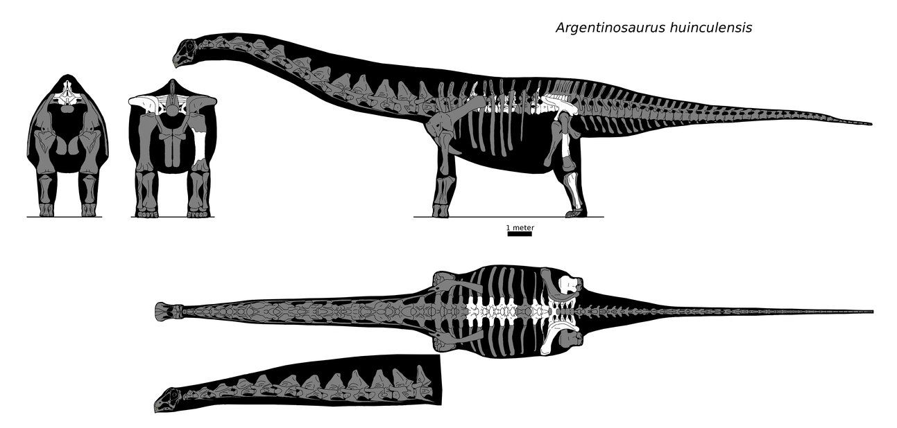

Argentinosaurus
- Largo: 35 metros
- Alto: 16 metros
- Peso: 77 toneladas
- Posible hábitat: Bosques Abiertos
Argentinosaurus (gr. "Lagarto de Argentina") es un dinosaurio saurópodo titanosaurio que vivió hace entre 97 y 93,5 millones de años, en el Cretácico superior en lo que hoy es Sudamérica.
Características
La cabeza de Argentinosaurus era bastante pequeña para su tamaño, ya que a penas suponía un 1% del peso corporal. Tenía unas mandíbulas potentes para su tamaño con dientes en forma de cuchara actos para arrancar el material vegetal. Confiaba en su enorme estómago, similar a un tanque de fermentación, para triturar la comida, aunque contaba con la ayuda de gastrolitos (piedras estomacales que tragan muchos reptiles herbívoros para mejorar la digestión). Tenía una protuberancia sobre los ojos que quizás tenía un color que destacaba bastante con su cuerpo, pero es más probable que al tener unas fosas nasales tan elevadas pudiera comer plantas acuáticas como nenúfares sin sumergir las fosas nasales; además le permitían refrigerar su pequeño cerebro, que contaba con una pequeña ayuda: un matojo de nervios cerca de las patas traseras que servía para mover esas patas y la cola, ya que había mucha distancia entre la cabeza y las patas, y sin este matojo se desplazaría muy descoordinado.
Su cuello era muy largo, y estaba compuesto por 13 vértebras que juntas llegaban a los 8 metros de longitud, es decir, que su cuello era el doble de grande que el de una jirafa. Entonces... ¿como podía su corazón bombear sangre a un cerebro situado a 8 metros de él. Se sabe que tenía un cerebro pequeño, por lo que necesitaba menos energía, pero debía de tener un corazón enorme, de más 300 kg de peso para enviar sangre a todo su cuerpo, desde la cabeza hasta la punta de la cola. Presentaba un sistema de sacos aéreos similar al de un pavo que le permitía absorber más oxígeno y por lo tanto enviar menos sangre, pues estaba muy cargada; además estos sacos reducían el peso del animal.
Las vértebras de Argentinosaurus estaban huecas y eran muy macizas y estaban unidas, de forma que reducían la flexibilidad del animal, pero le permitían soportar más peso. Quizás estas vértebras macizas y unidas fueron las que permitieron que el animal creciera tanto.

Las patas del animal recuerdan a las de un elefante en que eran muy gruesas y macizas. Los huesos y las patas eran pequeñas pero robustas, y los huesos estaban huecos, lo que reducía el peso del cuerpo. El hecho de tener unas patas tan cortas y robustas, junto a su enorme peso, revelan que no era un corredor rápido, y que probablemente su velocidad máxima fuera la de un lento paseo, aproximadamente 7 km/h (más rápido de lo que se desplaza un humano, pero esa era por el tamaño). Las patas acaban en garras similares a pezuñas, pero el dedo "pulgar" de las patas delanteras tenía una gran garra curvada que usaba como defensa ante depredadores como Mapusaurus, y también servía para excavar un agujero donde poner los huevos. Se cree que los pasos de una manada entera de Argentinosaurus se debían de oír a más de 10 km de distancia.
Es probable que, como su pariente el Saltasaurus, tuviera el lomo cubierto de placas óseas y escamas endurecidas que la habrían dado una protección aún mayor ante los depredadores, lo que dice que un Argentinosaurus adulto sería casi imbatible. Se cree que podían llegar a vivir hasta 200 años.
Tamaño
El tamaño de Argentinosaurus dio medidas tan diferenciadas como 35 a 40 metros de longitud y pesos de entre 50 y 120 toneladas. Pero recientemente se llegó a la conclusión de que medía unos 35 metros de longitud, 16 metros de altura y pesaba unas 77 toneladas, Superando en Tamaño al Patagotitan, Se ha calculado que un macho viejo de Argentinosaurus podía llegar a medir hasta 40 metros y pesar 75 toneladas. Esto se debe a que los reptiles nunca dejan de crecer. Además de esto, el Argentinosaurus quizás no pudiera crecer más de lo que creció, porque un animal grande necesita un territorio grande. El hecho de necesitar tanto espacio para un solo individuo revela que solo pudo haber hasta 570.000 Argentinosaurus a la vez.
El Argentinosaurus demuestra que este animal estaba cerca del límite superior de un animal terrestre, pues si comparamos las patas de una gacela (largas y finas) con las de un elefante (más cortas y más gruesas), nos dice que con un peso superior a 140 toneladas, las patas de dicho animal serían tan gruesas que se tocarían y el animal no podría moverse, pues las patas no serían más que cuatro columnas situadas bajo el cuerpo. Investigaciones antiguas dijeron que los machos más ancianos de Argentinosaurus morían porque ya no podían desplazarse y morían de sed o hambre, pues pudieron alcanzar pesos de hasta 160 toneladas; pero ahora se sabe que eso es imposible, pues un gran macho anciano podía llegar a pesar hasta un máximo de 100 toneladas, es decir, que aún estaban muy lejos del límite superior. Esto sugiere que los dinosaurios podían crecer mucho más que el Argentinosaurus.
Crecimiento
En base a otros saurópodos, suponemos que el Argentinosaurus crecía bastante rápido. A los 5 años tenía el tamaño de un pastor alemán, a los 15 años era como un caballo, y tardaba 50 años en alcanzar su tamaño definitivo. Pero como reptiles que eran, Argentinosaurus seguía creciendo después de la madurez sexual y alcanzaban tamaños gigantescos.
Alimentacion
Se sabe que este animal se alimentaba principalmente de pinos y plantas como las cícadas o las extintas cicadacoideas. Ahora bien, siendo un animal tan grande tendría que comer mucho, pero esa cantidad depende de si era de sangre fría o de sangre caliente. Si era de sangre fría, Argentinosaurus tendría que comer media tonelada de plantas al día; pero si era de sangre caliente tendría que comer una increíble cantidad de 3 toneladas de vegetación al día, lo que es una cantidad inimaginable. Pero si tenía que comer esa cantidad de vegetación cada día por una boca tan pequeña, tendría que comer todo el día a una velocidad enorme, por lo que sería prácticamente imposible. Este animal además no podía masticar, lo que haría más difícil la ingesta de alimentos, pero eso no era un defecto en el caso del Argentinosaurus, pues se dedicaba a engullir la vegetación entera confiando en que su enorme estómago la digiriera. Tendría que estar engullendo 20 horas diarias, si a lo que le sumamos la cantidad de agua que debía de beber, daría como resultado que este animal apenas dormiría 3 horas, por lo que quizás tuviera el cerebro dividido en dos partes, como los delfines.
Modo de vida
Los ejemplares de Argentinosaurus jóvenes nacían solos, y tenían que sobrevivir por suerte o habilidad hasta que medían unos 10 metros, momento en el que se unían a alguna manada. Hasta ese momento, las crías debían de estar atentas ente depredadores como el Skorpiovenator o Mapusaurus. Esta forma de crianza huérfana aseguraba que solo los más fuertes podrían aparearse, ya desde muy pequeños. Argentinosaurus vivía en constante movimiento en busca de comida, ya que arrasaban rápidamente con toda la comida del lugar donde se encontraban, y estas migraciones se extendían por todo el continente sudamericano. Pero los individuos adultos seguían siendo atacados por Mapusaurus, ya que cazaban en grupos lo suficientemente grandes para tumbar a un Argentinosaurus adulto. No tenían mucho cerebro, por lo que actuaban totalmente por instinto.
Descubrimiento e historia
Un agricultor llamado Guillermo Eredia encontró en 1988 una pieza de lo que parecía ser un dinosaurio. Iba caminando por la llanura cuando vio algo que le llamó la atención. Era un hueso. Excavó al rededor del hueso para intentar ver lo que era, e informó al personal de un museo para que investigara. Rodolfo Coria (un miembro del personal del museo y uno de los hombres que nombraron al animal) fue el primero en empezar a desenterrar los restos. A 6 metros del primer lugar con restos, Rodolfo entrevió lo que parecía ser una costilla, y como las costillas están unidas a las vértebras del animal, Rodolfo pensó que debía de haber una vértebra (las vértebras son los restos más comunes de saurópodos y los más usados para describir el tamaño del ejemplar), y gracias a la vértebra, se calcularon las dimensiones del Argentinosaurus. Para extraer la vértebra sin dañarla, se cavó alrededor de ella en un agujero de 3 veces el tamaño de la vértebra. Al tercer día de la excavación, se encontró por primera vez algo relevante, pero casi toda la vértebra seguía embutida en la roca. Al final de la excavación se desenterraron 7 vertebras de las 60 que debía de tener el animal.